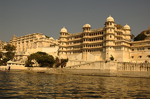
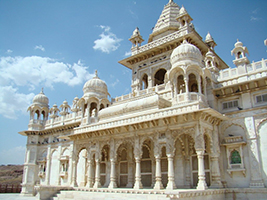

 |
|
Udaipur, is a palace complex in Udaipur, in the Indian state Rajasthan. It was built over a period of nearly 400 years being contributed by several kings of the dynasty, starting by the Maharana Udai Singh as the capital of the Sisodia Rajput clan in 1559, after he moved from Chittor. It is located on the east bank of the Lake Pichola and has several palaces built within its complex. Udaipur was the historic capital of the former kingdom of Mewar in the Rajputana Agency and its last capital. The City Palace in Udaipur was built in a flamboyant style and is considered the largest of its type in Rajasthan, a fusion of the Rajasthani and Mughal architectural styles, and was built on a hill top that gives a panoramic view of the city and its surrounding, including several historic monuments such as the Lake Palace in Lake Pichola, the Jag Mandir on another island in the lake, the Jagdish Temple close to the palace, the Monsoon Palace on top of an overlooking hillock nearby and the Neemach Mata temple. These structures are linked to the filming of the James Bond movie Octopussy, which features the Lake Palace and the Monsoon Palace. The subsequent publicity has resulted in the epithet of Udaipur as "Venice of the East".In 2009, Udaipur was rated the top city in the World's Best Awards by Travel + Leisure. |